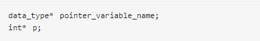
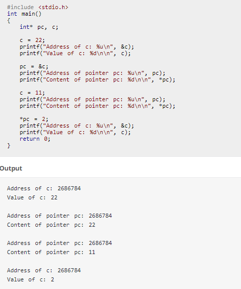
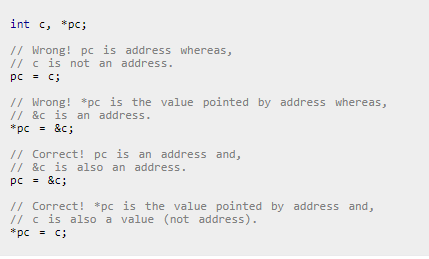

| Hello Lana! |
| |
|
| Best student in this month is Pera! Congratulations! |
| Frequently asked questions | Home page | My informations |
 | ||||||||||||||||
| Introduction: | C is a general-purpose, imperative computer programming language, supporting structured programming, lexical variable scope and recursion, while a static type system prevents many unintended operations. By design, C provides constructs that map efficiently to typical machine instructions, and therefore it has found lasting use in applications that had formerly been coded in assembly language, including operating systems, as well as various application software for computers ranging from supercomputers to embedded systems.
Operators: C supports a rich set of operators, which are symbols used within an expression to specify the manipulations to be performed while evaluating that expression. C has operators for: ,arithmetic: +, -, *, /, % ,assignment: = ,augmented assignment: +=, -=, *=, /=, %=, &=, |=, ^=, <<=, >>= ,bitwise logic: ~, &, |, ^ ,bitwise shifts: <<, >> ,boolean logic: !, &&, || ,conditional evaluation: ? : ,equality testing: ==, != ,calling functions: ( ) ,increment and decrement: ++, -- ,member selection: ., -> ,object size: sizeof ,order relations: <, <=, >, >= ,reference and dereference: &, *, [ ] ,sequencing: , ,subexpression grouping: ( ) ,type conversion: (typename) C was originally developed by Dennis Ritchie between 1972 and 1973 at Bell Labs. It was created to make utilities running on Unix. Later, it was applied to re-implementing the kernel of the Unix operating system[6]. Through 1980s, C gradually gained popularity. Nowadays, it is one of the most widely used programming languages[7][8] with C compilers from various vendors available for the majority of existing computer architectures and operating systems. C has been standardized by the American National Standards Institute (ANSI) since 1989 (see ANSI C) and subsequently by the International Organization for Standardization (ISO). |
|||||||||||||||
| Data types: | The type system in C is static and weakly typed, which makes it similar to the type system of ALGOL descendants such as Pascal.[28] There are built-in types for integers of various sizes, both signed and unsigned, floating-point numbers, and enumerated types (enum). Integer type char is often used for single-byte characters. C99 added a boolean datatype. There are also derived types including arrays, pointers, records (struct), and unions (union). C is often used in low-level systems programming where escapes from the type system may be necessary. The compiler attempts to ensure type correctness of most expressions, but the programmer can override the checks in various ways, either by using a type cast to explicitly convert a value from one type to another, or by using pointers or unions to reinterpret the underlying bits of a data object in some other way. Some find C's declaration syntax unintuitive, particularly for function pointers. (Ritchie's idea was to declare identifiers in contexts resembling their use: "declaration reflects use".)[29] C's usual arithmetic conversions allow for efficient code to be generated, but can sometimes produce unexpected results. For example, a comparison of signed and unsigned integers of equal width requires a conversion of the signed value to unsigned. This can generate unexpected results if the signed value is negative. | |||||||||||||||
| For loop: | The syntax of for loop is: How for loop works? The initialization statement is executed only once. Then, the test expression is evaluated. If the test expression is false (0), for loop is terminated. But if the test expression is true (nonzero), codes inside the body of for loop is executed and the update expression is updated. This process repeats until the test expression is false. The for loop is commonly used when the number of iterations is known. To learn more on test expression (when test expression is evaluated to nonzero (true) and 0 (false)), check out relational and logical operators.  Example:   The value entered by the user is stored in variable num. Suppose, the user entered 10. The count is initialized to 1 and the test expression is evaluated. Since, the test expression count <= num (1 less than or equal to 10) is true, the body of for loop is executed and the value of sum will equal to 1. Then, the update statement ++count is executed and count will equal to 2. Again, the test expression is evaluated. Since, 2 is also less than 10, the test expression is evaluated to true and the body of for loop is executed. Now, the sum will equal 3. This process goes on and the sum is calculated until the count reaches 11. When the count is 11, the test expression is evaluated to 0 (false) as 11 is not less than or equal to 10. Therefore, the loop terminates and next, the total sum is printed. |
|||||||||||||||
| While loop: | The syntax of while loop is: How while loop works? The while loop evaluates the test expression. If the test expression is true (nonzero), codes inside the body of while loop is executed. The test expression is evaluated again. The process goes on until the test expression is false. When the test expression is false, the while loop is terminated.  Example:  |
|||||||||||||||
| Switch/case | The syntax of switch/case loop is: How while switch/case works? The if..else..if ladder allows you to execute a block code among many alternatives. If you are checking on the value of a single variable in if...else...if, it is better to use switch statement. The switch statement is often faster than nested if...else (not always). Also, the syntax of switch statement is cleaner and easy to understand.  Example:   The - operator entered by the user is stored in operator variable. And, two operands 32.5 and 12.4 are stored in variables firstNumber and secondNumber respectively. Then, control of the program jumps to:  Finally, the break statement terminates the switch statement. |
|||||||||||||||
| Pointers | Address in C: Before you get into the concept of pointers, let's first get familiar with address in C. If you have a variable var in your program, &var will give you its address in the memory, where & is commonly called the reference operator. You must have seen this notation while using scanf() function. It was used in the function to store the user inputted value in the address of var.  Note: You may obtain different value of address while using this code. In above source code, value 5 is stored in the memory location 2686778. var is just the name given to that location. How to create a pointer variable?  Reference operator (&) and Dereference operator (*) As discussed, & is called reference operator. It gives you the address of a variable. Likewise, there is another operator that gets you the value from the address, it is called a dereference operator *. Below example clearly demonstrates the use of pointers, reference operator and dereference operator. Note: The * sign when declaring a pointer is not a dereference operator. It is just a similar notation that creates a pointer. Example:  Common mistakes when working with pointers: Suppose, you want pointer pc to point to the address of c. Then: 
|
|||||||||||||||
 |
| FAQ/How to use | PageUp | My informations |
Thanks for using our app!